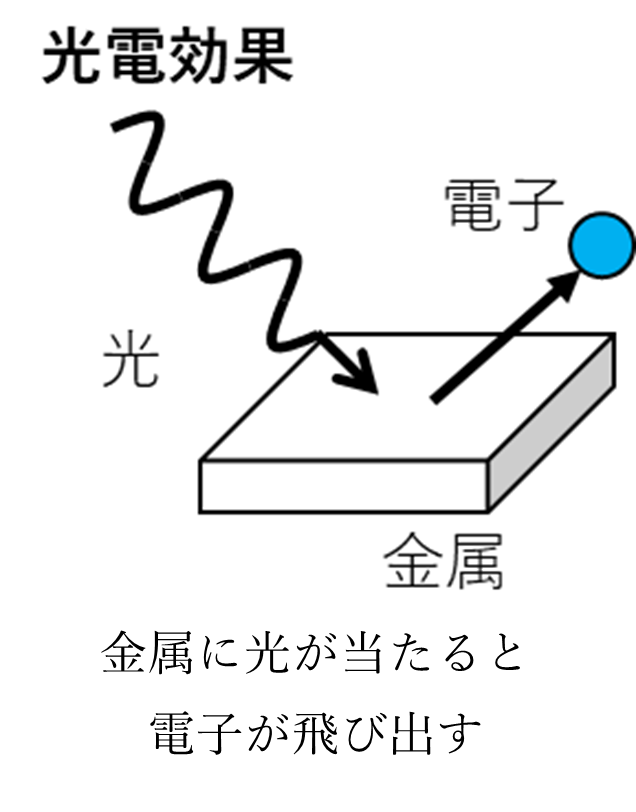
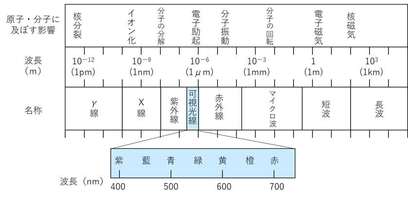
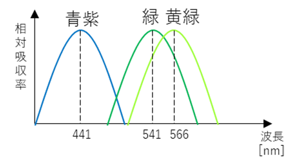
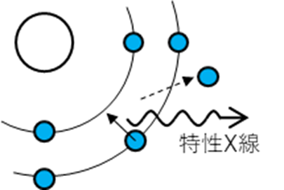
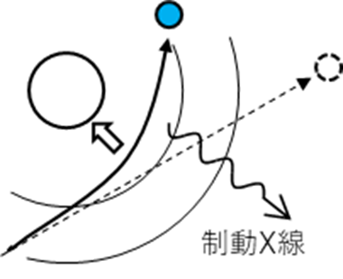

光・スペクトルについて
光とスペクトルについて紹介するぜ
光とは
光とは電磁波の一種であり、粒子性と波動性の性質（二重性）をもつ。
粒子性：粒子（小さな粒）としてふるまう性質。光の粒子性の例として光電効果がある。
波動性：波としてふるまう性質。光の波動性として回折や干渉といった性質がある。

光の量子（物理量の最小単位）は光子（フォトン）である。つまり光は光子の集まりってこと。光の定義は厳密には可視光のことを意味し、広くは電磁波と同義である。
光の速度は真空中で、約30万[km/s]である。真空中での光の速度は光速度不変の原理より一定であり度の慣性系で測定しても（誰から見ても）同じである。
光も放射線（ｘ、ｙ線）もマイクロ波もすべて電磁波であるので違いは波長（エネルギー）である。また光は波なので媒質によって進む速度が変わる。
電磁波とスペクトル

・可視光線（380nm~780nm）
人間の目が知覚することができる波長範囲の電磁波であり、狭義の光。この範囲内の波長の電磁波を色として知覚できるのは視神経が特定の波長の光を吸収し、それを感じることができるためである。この範囲外の電磁波である紫外線や赤外線などは角膜や水晶体が吸収してしまうため網膜や視神経まで到達しないので見えない。

・紫外線、赤外線
可視光線の波長範囲から外れた領域の電磁波。
tips的なやつ
日焼けで肌が黒くなるのは紫外線から肌を守るため紫外線を吸収できるメラニンを生成するかららしい
・マイクロ波、短波、長波
波長が長いためエネルギーは小さいが、散乱しにくく長距離の無線通信に用いられる。とくに短波（1ｍ～100ｍ）はその周波数範囲が3Mz～300MHzであり一般的なFMラジオで利用され、長波（100ｍ以上）はその周波数範囲が3MHz以下であり、一般的なAMラジオで利用されている。ITU（国際電気通信連合）によると周波数範囲によりLF（low frequency）やUHF（ultra high frequency ）など細かい区分がある。
・X線（10nm~100pm）

波長が非常に短く、エネルギーが高い電磁波。また放射線の一種でもある。物質を透過する能力（透過性）が高く、鉛や鉄のような重金属でしか遮蔽することができない。
発生方法によりX線には種類があり、特性X線と制動X線がある。励起により内側の軌道の電子が励起され、空いた部分に外側の電子が遷移することで余分なエネルギーがX線として放出されるものを特性X線という。原子核のクーロン力に引き付けられ、運動していた電子が失った分のエネルギー分がX線として放出されるものを制動X線という。
tips的なやつ
実は真空中でセロハンテープを3cm/sの速度ではがすとレントゲンが取れるレベルのX線が発生するらしい。ガムテープをはがすときにも光が発生していてこういうのをトライボルミネッセンス（摩擦発光）って言うらしい。
・γ線（10pm以下）
性質はX線と同じ。α崩壊やβ崩壊により励起状態となった原子核が基底状態になるとき、余分なエネルギーがγ線として放出される。
光による反応
・光化学反応
物質が光を吸収して起こる化学反応のことであり、一般に励起された電子が飛び出し、酸化・還元反応を起こす。
・光イオン化
物質が光を吸収することで電子を放出しイオン化すること。本質的には光電効果と過程が同じ。
・電子遷移
光子のエネルギーは以下の式で求められる。
このときhはプランク定数、vは振動数、cは光速度、λは波長である。
E=hν=hc/λ
この式より光子エネルギーは波長に反比例することが分かる。
基底状態（もっともエネルギーの低い状態）の電子が外部からエネルギーを受け取ることで励起状態（エネルギー準位が高い状態）になること、またはその逆を電子遷移と呼ぶ。電子はエネルギー準位（電子をエネルギーから見た相対的な位置）の低い方へ行こうとする。電子が励起するためにはその準位間のエネルギー差と同じエネルギーが必要である。
電子に光子が衝突したとき励起するかを場合分けし考えると以下のようになる。
エネルギーが少ない
エネルギーが必要なエネルギーに達していないため光子一つでは励起しない。また波長が長いため光が波動性を持っていることを考えると、光子が原子に入射しても散乱せず直進して透過するため吸収されにくい
つまりエネルギーの少ない（波長の長い）光子では励起しにくい。
エネルギーが多い
波長が短いためより散乱しやすく、原子で反射するので吸収されにくい。
つまりエネルギーの多い（波長の短い）光子では励起しにくい。
準位間のエネルギー差と光子エネルギーが等しい
電位が励起するために必要なエネルギー（準位間エネルギー差）と光子エネルギーが等しいとき共振が起こり、最も光子が効率的に吸収される。
これはボーアの振動数条件より
であることからわかる。
また電子も光子も波動性をもっていることから、干渉を起こすため電子の振動数と光子の振動数が同じとき電子の振動（エネルギー）が増幅されることが分かる。吸収される光子の振動数はリュードベリの式よりで求めることができる。
このときmeは電子質量、eは電気素量、ε0は真空の誘電率、ｈはプランク定数
naは初めの準位の主量子数、nbは終わりの準位の主量子数である。
水素が電子がn=1からn=2に励起するときの吸収される光子の振動数はリュードベリの式よりであり、λ＝c/vであるのでつまり121.5nmとなりこれは放射の水素スペクトル（ライマン系列）のn=2の時の値と一定する。
つまり準位間エネルギー差と光子エネルギーが等しいとき励起する。